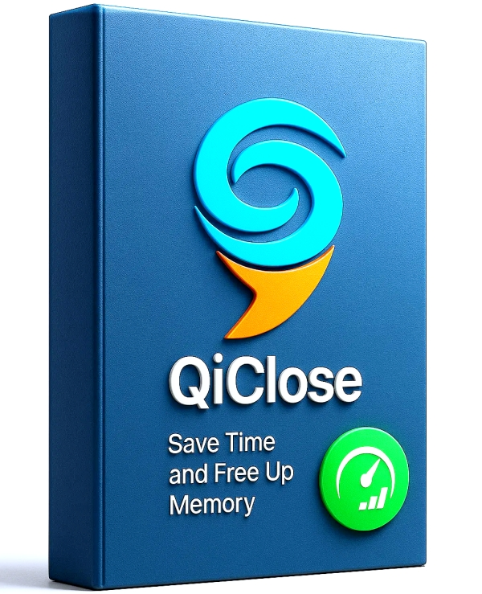

Quick Close Tool
Too many windows open? Apps running wild?
Quick Close lets you instantly close all open windows and running apps with a single shortcut key, Just press Alt + F1 and everything vanishes in just 1 second.
How to use ?
 Caution !
Support me
Caution !
Support me
Caution !
⚠️ Extremely Important Warning:
Make sure to back up your data before using Quick Close to shut down all windows. You should only use Quick Close when your computer is slow, frozen, or experiencing RAM overload that leads to system congestion.
Although this is a very useful tool for closing multiple applications at once, it cannot replace or outperform manually closing apps yourself.
This software is especially suitable for tech professionals such as debuggers, testers, developers, or miners—those who truly understand system processes and application workflows.
Make sure to back up your data before using Quick Close to shut down all windows. You should only use Quick Close when your computer is slow, frozen, or experiencing RAM overload that leads to system congestion.
Although this is a very useful tool for closing multiple applications at once, it cannot replace or outperform manually closing apps yourself.
This software is especially suitable for tech professionals such as debuggers, testers, developers, or miners—those who truly understand system processes and application workflows.
Download for Windows
Download x64 (.msi)


 Zalo/Momo VN: 0353.155.991
Zalo/Momo VN: 0353.155.991